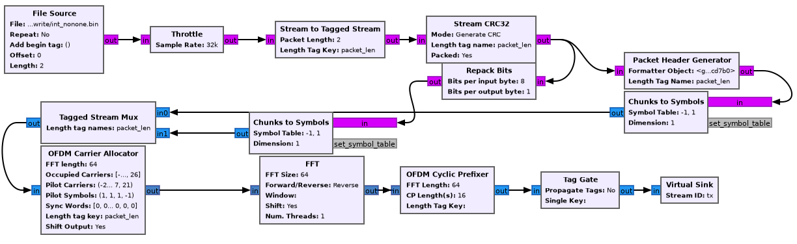

Deep dive into the OFDM implementation in GNURadio
Table of Contents
- 1. Introduction
- 2. Transmission
- 3. Reception
- 3.1. Schmidl & Cox
- 3.2. Header/Payload Demux
- 3.3. Header chain: FFT
- 3.4. Header chain: OFDM Channel estimation
- 3.5. Header chain: Frame equalizer
- 3.6. Header chain: OFDM Serializer
- 3.7. Header chain: Constellation decoder
- 3.8. Header chain: Packet header parser
- 3.9. Payload chain
- 3.10. Repack bits
- 3.11. Stream CRC32
1. Introduction
GNURadio (GR) provides the OFDM Transmitter and OFDM Receiver
blocks to do orthogonal frequency division multiplexing. These blocks
are hierarchical, meaning that they're really composed of other (C++)
blocks internally. Indeed, both of these blocks are written in python
and simply describe connections between blocks. Because of this, there's a
great deal of implementation detail in the source code of these blocks
that is poorly documented in a simple and clear manner. This article
is an in-depth explanation of the OFDM implementation.
I'll shortly be working on updating the GR wiki and block documentation with these notes, but for now they'll stay here. What I won't be covering in depth is the mathematical basis for much of OFDM, instead I write about these ideas mostly on my personal wiki, although the standard texts in telecom certainly do a better job. I'll try to include a bare minimum here, and link to my wiki articles or other key sources when possible. Start here.
1.1. High level introduction to the OFDM idea
Orthogonal frequency division multiplexing is a multi-carrier scheme that's fairly widely used today, especially in WiFi and LTE.
This multi-carrier property just means that instead of transmitting a signal at one frequency (on one "carrier wave"), we transmit on many sub-carriers spaced apart by a little bit of bandwidth.
The core of the idea that makes OFDM special is the technique by which it makes these subcarriers independent (or, orthogonal), which boils down to computing the IFFT of the signal at the reciever and adding a cyclic prefix in between each set (determined by the size of the FFT) of data pieces. I go into much more detail about why this leads to interesting properties in another article I wrote about
2. Transmission
The following is a mostly faithful reconstruction of the transmission
scheme given in gr-digital-python/digital/ofdm_txrx.py.

For the sake of the narrative, we'll take it step by step and introduce the parameters to each block as we get there.
2.1. File source
For the purposes of this whole example that we'll follow through the chain, let's assume we want to transmit some number of bits, say 16 of them (we'll see why this number is convenient shortly).
For simplicity, let's say all these bytes are just 1 bits, so
You might generate a file to be used with this block with a bash call
to like printf '\xFF\xFF' > test, but pick your poison.
Set the length to 2, since we want 2 bytes.
2.2. Stream to tagged stream
Classic streams in GR are just streams of bytes with no information or grouping. We however, would like to group the bytes together in a flexible way (meaning that we should be able to increase the size of a group).
The technique for doing this is attaching a "tag" every \(n\) samples,. This tag says nothing but the length of the group following it. Really the reason this is necessary is so that C++ programs can allocate memory for a buffer large enough to do processing on that group, before recieving the data. See the GRwiki article on tagged streams. Stream tags are quite flexible, and we'll see them again for other uses. Fundamentally, tags are just a pair of key and value, where both are polymorphic-types (PMT's).
For our example, since we want to transmit 2 bytes, we'll set the length to 2.
2.3. Stream CRC32
This block simply adds the CRC32 error-detection code to the end of the data. The reasons why CRC32 tends to be pretty good for OFDM bursts, and the implementation of the algorithm are explained pretty well by this wikipedia article.
The CRC32, as the name suggests, adds 32 bits (\(\frac{32}{8} = 4\) bytes) to our data, bringing the length up to 6 bytes.
2.4. Header generator
The data coming out of the tagged stream block splits here. We'll talk about the header generation first.
Let's take some time to talk poorly-named jargon for a second:
- OFDM frame/burst
- a set of some number (as many as necessary) of OFDM symbols and other stuff
- OFDM symbol
- a set of \(n\) (determined by the size of the FFT) complex symbols
- complex symbol
- an atomic piece of encoded data. for more information about why you can hold signals as complex numbers, see my article on quadrature signals.
The "other stuff" included in an OFDM frame are 3 extra OFDM symbols, the header OFDM symbol, and two "sync words" that are known by the reciever as part of some standard. We'll see the generation of the sync words and their usage for time and frequency synchronization later on in the reception section.
The header OFDM symbol (before modulation) contains three pieces of data:
- 12 bits for the length of the packet (here, 6 (including the 4 extra from the CRC))
- 12 bits for the header number, which is incremented after every packet (modulo xFFFF)
- 8 bits of CRC computed from a combination of the above numbers.
We must encode these bits one way or another, but the number of bytes (and thus complex symbols) used to encode these bits depends on the modulation scheme used, and in particular, the number of bits we can encode in a specific complex symbol.
Classically, in the standard, we encode everything in the header with BPSK, binary phase shift keying, which essentially encodes one bit in the phase of one complex symbol, and gives all-real complex symbols.
With BPSK, each byte will only have its LSB representing actual data. With QPSK, which can encode 2 bits per complex symbol, the lowest 2 bits in the byte represent data, and so on. The reason we have to do this is because next, we will be mapping bytes to complex symbols, but it wouldn't do to pack a byte full of data when we can only encode 1 of the 8 bits into a symbol to transmit.
In sum, at worst (BPSK), we have 32 bytes (although, each byte only has one bit of data) of header data, but we will send this as one OFDM symbol on it's own. In IEEE jargon this is either called the header or the SIGNAL symbol, and in practice also includes information like data rate (can't just waste 20 bits, can we?).
A particularly sharp reader might notice that we encode the packet length as 6, even though the real packet length will be 6 * 8 = 48 complex symbols. This is fine, because the factor of 8 is compensated on the receiver side in the OFDM serializer block, which we'll cover shortly.
2.5. Repack bits
Typically the CRC32 block is routed through a "Repack bits" block before being converted to symbols.
The incoming data is usually a byte array that is packed full of data, but we want each byte to represent just as many bits as we can encode into a single complex symbol.
If we're using BPSK, then each byte should only have one bit of data. The repack bits block takes a \(k\) and \(l\), and converts bytes containing \(k\) bits of data into bytes containing \(l\) bits of data. Thus for BPSK, we'd use \(k = 8, l = 1\), and for QPSK we might use \(k = 8, l = 2\).
At \((8, 1)\), a byte array containing [FF] is transformed into [1 1
1 1 1 1 1 1] Similarly, A byte containing [0F] becomes [0 0 0 0 1
1 1 1], where each of these 0s and 1s aren't bits, but bytes with
the top 7 bits off.
2.6. Chunks to Symbols
Here we convert each byte into a complex symbol. This is done via a symbol table, or a constellation. I briefly discuss the ideas behind constellation encoding here, but the high level idea is to map each bit, or sequence of bits, to a "location" on the complex plane, or a pair of real and complex co-ordinates, so they can be transmitted as a quadrature signal. This is possible since \(\sin\) and \(\cos\) form orthogonal bases for the signal space.
Constellations are typically quite specific. Points on the constellation should be as far apart as possible, in order to minimize the ambiguity when decoding any particular recieved complex symbol. However, the distance of a constellation point from the origin affects the energy (magnitude of the resulting symbol) required to transmit, and so this must be considered as well.
Here we use binary-phase-shift-keying for the payload's encoding, although the IEEE standard suggests QPSK for a higher data transmission rate. In BPSK, resulting complex symbols are real, and the real part is 1 if the bit is 1, and -1 if the bit is 0.
In gnuradio, the BPSK constellation points are obtained as:
from gnuradio import digital header_mod = digital.constellation_bpsk() points = header_mod.points()
2.7. Tagged stream mux
This block combines two streams in order. The output is the first stream followed by the second stream.
2.8. OFDM carrier allocator
Now, we have a long stream of complex symbols, (80, to be exact), and we must transform them into vectors of what to load into each frequency. Assuming that we are using 64 subcarriers (IEEE standard), we expect to produce a vector of \(n\) samples, which are each arrays of 64 complex numbers, where \(n\) is the number of OFDM symbols we're sending in the frame.
Here, we have one OFDM symbol for the header, one symbol for sync word 1, and another symbol for sync word 2, and one symbol for data and the CRC32 code. The structure of each sync word is given below.
In OFDM, although we get 64 subcarriers to transmit on, payload OFDM symbols only get 48.
The IEEE 802.11a standard suggests transmitting on subcarriers from -26 to +26, for a total of 52 subcarriers. That's what we'll use for now in our example. This subcarrier indexing is relative to some central carrier frequency at index 0. The frequency spacing between subcarriers will be determined by the size of the FFT.
The bottom 6 and top 5 subcarriers are meant to be left empty according to the IEEE standard. This is generally to prevent excessive out-of-band emission. It's also convenient when applying a low-pass filter to the signal.
Additionally, the zero-subcarrier is left null. This is again a measure for hardware devices that have interference at the carrier frequency, specifically synchrodynes which have an oscillator tuned to the carrier frequency.
Finally, the pilot subcarriers, (-21, -7, 7, 21) contain receiver-known data as well. These sequences are used for a wide variety of purposes, and it's protocol dependent. Here, the pilot sequence is (1, 1, 1, -1), one symbol per pilot tone.
It's important to note that the preamble (combination of the sync words) don't follow these rules. The sync words transmit non-pilot sequences on the pilot subcarriers.
The reason why we chose to transmit 2 bytes is now clear. After CRC, we have 6 bytes, and \(6 * 8 = 48\) bits, if you use BPSK to encode one bit to one complex symbol, this is exactly as many as we can fit into one OFDM symbol. Using QPSK as the IEEE standard suggests would let you fit twice as much data.
The operation of the OFDM carrier allocator block is now fairly simple to explain.
- Copy each sync word into the output buffer (each are 64 complex symbols) straight
- For each of the header and data symbols (remember, we muxed them)
- Copy a symbol to each of the occupied carriers
- Fill in the pilot carriers with the pilot sequence
- Return the size of the vector to ensure it's formatted correctly
Because we have 2 sync words, 1 header, and 1 data symbol, we'll have 4 OFDM symbols in a single vector sample [see below for a clarification on this] now.
2.8.1. Sync words in OFDM synchronization
The idea of "sync words" are fundamental to wireless communication. The receiver is only able to equalize for environmental and interference conditions (the "channel"), when there is some data transmitted that is known to both the transmitter and receiver.
Sync words may also be used for detecting when the packet starts at all, as well as compensating for a constant (across subcarriers) frequency offset, the carrier frequency offset.
Typically, these sync words have some clever properties that make doing these easier. I'll outline the generation of each of these sync words briefly.
- Sync word 1
Sync word 1 is generally used for timing estimation (i.e when does our data start), which is sent first since you can only pick up data following it.
In 1997, Schmidl & Cox proposed using a sync word that had identical first and second halves. What is actually in these halves isn't so relevant, but they should have constant transmit energy.
From a property of the discrete fourier transform, the classical way to produce a time-domain signal that is duplicated around its center is to take the DFT of a signal that has real-only data on even frequencies (assuming a symmetric fft frequency ordering scheme starting from \(-k\) and ending at \(k-1\) inclusive). To be more specific, this holds when the signal has hermitian symmetry and the right parity. In the interest of space, I'm not including the proof here, but it can be found in 8.6.4 (p. 653) of Discrete-Time Signal Processing by Oppenheim & Schafer.
We can produce this sync word with:
list(map(lambda x: np.sqrt(2) * np.random.choice([-1, 1]) if (x in oc[0]+[-21, -7, 7, 21] and x % 2 == 0) else 0, range(-32, 32)))
where
oc[0]is a list of occupied carriers. - Sync word 2
Sync word 2 is used for channel estimation and coarse frequency offset. Computed via
list(map(lambda x: np.random.choice([-1, 1]) if x in oc[0]+[-21, -7, 7, 21] else 0, range(-32, 32)))
Note that the second sync word indeed has higher magnitudes, and thus transmit energy, but it will prove to be useful during reception.
2.8.2. Streams vs vectors
In GR, streams and vectors are the two main types of data passing techniques. Streams pass each sample individually, whereas vectors contain some number of samples in a vector.
In this way, blocks that operate on vectors (notably, the FFT block), should be thought of as doing a parallel computation.
2.9. FFT
This block simply applies the inverse discrete fourier transform in parallel (operates on a vector) to each of the 64-length OFDM symbols.
The output will therefore also be 64-length time-domain OFDM symbols, although the meaning of the word is now slightly different. The inverse fourier transform is used here, expecting that the resulting time domain signal will be cyclically prefixed.
2.10. OFDM cyclic prefixer
This block applied a cyclic prefix to each item in the vector input. A cyclic prefix is simply prefixing a block by some number of time-domain symbols from the end of a 64-length block.
The cyclic prefix is the core of the OFDM idea, and has deep implications for equalization at the receiver. I'd recommend my article on OFDM, or the paper "Wireless multicarrier communications" by Wang & Giannakis (2000).
The high level idea, skipping a fair bit of linear algebra, is that adding the cyclic prefix turns the linear convolution of the data with the channel (since the output of a linearly time invariant channel is determined via linear convolution) into a circular convolution. As it would turn out, the matrix that does circular convolution turns out to be diagonalizable in the Fourier basis, which implies a removal of inter-symbol interference by pre and post multiplying by the inverse DFT and DFT matrices, as well as cheap equalization techniques.
As for the implementation of the cyclic prefixer block, I'll only explain it in a bit of a limited scope. The block has two operating modes, one meant to be used before the carrier allocator in the stream domain "packet mode", and the other meant to be used after the FFT, in so called "freewheeling mode." I'll only cover the second, which is enabled by not specifying a length tag.
Additionally, the block supports the application of the raised cosine pulse shaping filter parametrized by a rolloff length, but this is typically unnecessary and is indeed set to a default of 0. *
2.11. Output
Quick picture of what you might expect to see at the transmission end of the OFDM chain.
We can clearly see the side lobes due to null subcarriers.
3. Reception
Here's an expansion of the reciever block, which is significantly more complicated than the transmitter.
3.1. Schmidl & Cox
The first step in decoding an OFDM burst is to figure out when it starts. This block uses the strategy given by Schmidl & Cox in their 1997 paper "Robust Frequency and Timing Synchronization for OFDM." There are two things that the algorithm achieves. The first is determining when the frame starts of course, but the second is coming up with a fine frequency offset measure that in effect cancels out the short-term carrier frequency offset, in which the carrier frequency is slightly off due to a slight, constant time offset in the oscillator.
3.1.1. Timing sync
The timing synchronization portion relies on the property of the first sync word to be symmetric, as in its first half should be exactly equal to its second half.
We also know how long the whole symbol is, 64 complex samples. Therefore, we can figure out when we're looking at the sync word by autocorrelating the incoming signal with a signal that's delayed backwards in time by 32 samples. Recall that autocorrelation is really just multiplying with the conjugate, so clearly we'll get the highest value when the two signals "match up".
The schmidl and cox block is a hierarchical block itself which does this.
- Delay the signal by 32 samples, take its complex conjugate
- Multiply with the non-delayed signal
- Low-pass-filter to smoothen the data
- Compute the magnitude squared of each complex symbol
- Divide by the square of the magnitude squared of the non-delayed signal, also low-pass-filtered. This normalizes the correlation metric since you're dividing out one part of the original multiplication.
- Find the plateau of the result of 5.
You can observe a graph showing autocorrelation peaks like the above
by defining the flag SYNCADDDEBUGOUTPUT in the source file
ofdm_sync_sc_cfb_impl.cc, editing the corresponding block .yml
file, and recompiling gnuradio. This is handy for fine tuning the
necessary threshold for plateau detection. The graph above is recorded
during a transmission with USRP 2901 SDRs. I believe the smaller peaks
are due to the fact that our payload OFDM symbol is all ones, and is
therefore also close to having identical first and second halves,
except for the pilot symbols.
- Plateau Detection
Step 6 has some nuance. You will see that the S&C block outputs a byte on the "trigger" port which is wired to the plateau detector.
The plateau detector accepts a series of floats, the output will be a byte array filled with as many zeros as samples are given, and a 1 at the index at which the plateau was detected.
Plateau detection works by looking for data above a certain threshold. This threshold must be heuristically determined (i.e trial and error) based on channel conditions. Once a data point above the threshold is found, we continue iterating until we find the first data point below the threshold. If the difference between the indices of these two points is bigger than one (there wasn't just an outlier), then we set the index corresponding to the midpoint between the two points to 1 in the output byte buffer.
I'm not entirely certain why the center of the plateau is chosen instead of the flank start.
3.1.2. Fine frequency offset
The key observation is that the frequency offset we're trying to eliminate, the carrier frequency offset, will result in accumulated phase shifts over time. Since the first sync word is identical in the first and second half, all we need to do is compare the recorded phases in the first half and the second half.
This is done in much the same way as the timing sync computation.
- Compute the correlation between the signal and the signal delayed by half the length of the OFDM symbol (32 samples)
- Low-pass filter the result of the correlation, and compute the arg (a.k.a arctan, angle or phase)
- Output the latest arg result from 2 when a peak is detected by the plateau detector in the timing sync path.
It is critical to note that the output of this block isn't actually "frequency offset" as the name suggests, but phase offset instead, \(\hat{\phi}\) in the paper if you're familiar with it.
- Applying the frequency offset
Actually modifying the signal using the frequency offset metric computed earlier is not immediately straightforward.
The first issue is that because the plateau detection is done using a signal delayed by N/2 samples, by the time we've detected the frame, we must have finished looking at the (undelayed) second half, and compared it to the (delayed) first half. So, when we actually want to use the frame, we have to backtrack, by using a signal delayed by the length of the whole sync word. Recall that the sync word is 64 samples, but there are 16 extra samples from the cyclic prefix. Therefore, we have to use the signal shifted by 80 samples.
The second issue is that the normalized frequency offset has to be applied to the signal. In the paper, the authors write (p. 8) that the frequency must be offset by \(\frac{\hat{\phi}}\) by multiplying the signal with the complex waveform \(e^{-j2t\hat{\phi}\frac{1}{T}}\) where \(\phi = \Delta f \pi T\) (eq. 39). Substituting, we get \(e^{-j2\pi t \Delta f}\)
Things can get a bit tricky here. In the paper, \(T\) refers to the length of the OFDM symbol in complex symbols! The index \(t\) doesn't refer to a time index in say, seconds, but rather indexes the complex symbols, and goes from \(0 \dots T\) which is in fact equal to the size of the FFT. Similarly, \(\Delta f\) does not refer to actual bandwidth in Hz, but is instead normalized to the spacing of the carriers themselves.
The frequency mod block computes the waveform \(e^{jk\phi}\), where \(k\) is the sensitivity parameter. Really, this block performs general frequency modulation of a signal that varies, but in for this case this simplification works fine. Solving for \(k\), we see that it must be \(\frac{-2}{T}\) in order to match the required waveform.
In summary, all we really need to do is take the phase offset estimate, produce a waveform that will correct the signal via frequency modulation, and the multiply that waveform with a sufficiently delayed version of the signal.
We have to be a little careful here as well. Delaying a signal by 80 samples has the effect of prepending 80 zeros to the front of the data. With 4 total OFDM symbols, that's 320 + 80 = 400 items. The Schmidl & Cox block however, receives a signal of length 320, and so the frequency mod sinusoid is also of length 320. Multiplying the two in GR, the longer signal will get truncated from the front, which means that you will lose a data payload symbol, not good!
This isn't a real problem if you repeat your frames over and over again, or if you use a real SDR that is always collecting samples, but can be hard to debug in a pure, oneshot simulation. The solution is the mux the input tx stream with an extra 80 items of noise or constant at the end of the signal data.
3.2. Header/Payload Demux
The HPD block is a very complex mechanism for parsing burst transmissions like OFDM. The block acts like a state machine, with the default state being waiting for the data on the trigger port. An important distinction when discussing the parameters of this block is items vs symbols. Items refers to the actual complex samples coming from the radio. Symbols on the other hand, refers to OFDM symbols here. Therefore, our itemspersymbol should be fftlen, 64. Ensure that the block is set to output symbols, because this is what every OFDM block expects downstream.
3.2.1. Trigger state
In the default state, we search the byte array sent to the trigger port, and find the index (i.e offset) until the first set byte. From here, switch to the header state.
3.2.2. Header state
Header state copies a certain parametrized number of full symbols (64 items) into the header port, and switches to the msg wait port.
Here, we wait for a message to be sent to the message in port. This state does nothing, and will not be exited until parseheaderdatamsg() is called to set the state to either HEADERRXFAIL or HEADERRXSUCCESS.
This method waits for a PMT (polymorphic type) dictionary, where the key is an interned string corresponding to the lengthtagkey and the value is a long representing how many OFDM symbols are in the current frame (which recall, is encoded in the header symbol). Alternatively, you may also just send a single PMT long, in which case this is interpreted as the length of the payload. A PMT that is parsed in either way sends us to the success state.
A PMT that is instead PMTF (the token failure placeholder) sends us to the failure state. Two extra cases can send us to the failure state, one in which the payload length is negative, and one in which the payload length is greater than the half the output buffer. By default, this means that you are capped at 64 payload symbols per frame, if your items are indeed complex.
For our purposes in this example, it is entirely possible to write a block to, on receiving any data, sends a message with value 1, since we know how many OFDM symbols are in the payload, but in practice the number of payload symbol varies depending on how much data we need to transmit.
3.2.3. Header RX Success
Transitional state that consumes the header items and any padding. This is to make the in buffer aligned perfectly with the payload on the next work iteration.
3.2.4. Payload
Simply copy the number of items determined in the header state to the payload output port. If the output symbols option is toggled, then the output will be symbols, therefore the payload will be a vector of length payloadlength (here 1), and each element is another array of 64 complex numbers).
It's super important to realize, especially in simulation, that the payload state will only trigger when there actually enough samples as we're expecting (given the frame length from the message).
3.3. Header chain: FFT
We'll now discuss the "header chain", or the path from the header out port of the HPD, to the message in port of the same demux block.
Currently, our 64-length vector of symbols (currently 3 in the example, 2 syncs and 1 header) is still in the time domain. However, they were encoded in the frequency domain, so we convert from time to frequency with a forward FFT block.
3.4. Header chain: OFDM Channel estimation
Here, we use the two sync words in order to compute the coarse carrier offset and "channel taps" (the frequency response of the channel across subcarriers). The channel taps specifically are critical to know because that's how we equalize the signal to get our data out.
The channel taps are already corrected by the carrier offset.
The output vector will be missing both sync words, so only the header is left. The channel estimation done results in a 64-length complex vector, which is added to the vector as a tag, with key "ofdmsynccarrtaps" and the carrier offset is added to the vector as a tag with key "ofdmsynccarroffset" and is a long.
3.4.1. Carrier offset
Carrier offset is computed in one of two ways, depending on how many sync words are supplied.
- 2 sync word case
Computation follows the same procedure from the schmidl and cox block. We iterate through some range of possible carrier offsets, compute the \(B_g\) metric (eq 41), and find the \(g\) that maximizes it iteratively.
- 1 sync word case
In this case, the block will fill a new, artificial kind of sync word by computing the differences between every item and the item two samples ahead of it. Of course, this means there are two fewer (62) items in the new word, so there are 2 zeros left behind at the end.
Next, we do a very similar correlation procedure between the original word and the artificial one. First iterate through \(g\) for possible carrier offsets, and find the \(g\) that gives the maximum sum of products between the $j$th item of the known sync word and the $j + g$th item of the artificial one.
3.4.2. Channel taps
To compute channel taps, we'll use the second sync word if it exists, otherwise just use the first one.
GR does channel estimation using a very simple technique, in which every item received in the sync word is just divided by the known item at that index.
We must offset the taps using the carrier offset computed earlier. This is simply done by only computing the channel taps starting at the offset frequency if positive, or ending \(g\) items short of the end of symbols if negative. While doing the division, we compare every $i$th received element with the $i - g$th element, where \(g\) is the offset in carriers.
In the one-sync word case, where we're forced to use sync word 1, we have to deal with the fact that there is only data on the even frequencies. Because everything else is 0s, the channel taps (received/reference) will also be 0s on the odd frequencies. To interpolate, GR uses the naive strategy of setting every odd frequency to the even frequency immediately behind it.
In the source file for ofdmchanestvcvc, there's a TODO left for implementing red noise thresholding.
3.5. Header chain: Frame equalizer
This block equalizes an OFDM frame (a sequence of OFDM symbols) using the tags produced by the chanest block earlier. To be a bit more accurate, the block itself doesn't do the equalization, but uses an equalizer object that the user passes in.
One extra tag is added to the vector output, containing the number of symbols in the frame.
Before using the equalizer object, a few things are done:
3.5.1. Offset correction
- If the offset \(g\) is negative, then set \(g\) zeros in the beginning of the output, and copy the whole header shifted forward by \(g\) items.
- If the offset is positive, we need to shift back. Set the last \(g\) items to be zeros, and then copy the header starting at the offset straight into the output buffer, dropping \(g\) items at the end to avoid writing into the zeros.
3.5.2. Phase correction due to offset
The carrier offset (an offset in frequency) will also result in a phase offset. This is also corrected. For each OFDM symbol, every item is multiplied by a factor of \(\exp{j-2\pi g (i + 1) \frac{N_{gi}}/{N}}\) where \(g\) is the offset, \(N_{gi}\) is the length of the guard interval, \(N\) is the fft size, and \(i\) is the index of the current OFDM symbol.
Looking at this phase correction, the point to notice is the the phase correction for each OFDM symbol changes over time, and indeed accumulates until it wraps around \(2\pi\). Second, the speed at which the phase correction changes depends on the size of the carrier offset. If the carrier offset in 1, then the phase correction factor wraps around every 4 symbols, but if 2, then it wraps around every other symbol.
3.5.3. Equalization
There are two variants of equalizers implemented in GR at the time of writing, static and simpledfe. We'll discuss simpledfe (simple Decision Feedback Equalizer) here.
There are essentially two parts to how the equalizer works. The first is the pilot-based channel modification, and the second is the constellation mapping.
For each symbol \(i\) and for each subcarrier \(k\) in each symbol, if it is a pilot carrier then we update the channel state for \(k\) to be
\begin{equation} \alpha * H[k] + (1-\alpha) * \frac{s_{i, k}}{p_j} \end{equation}Where \(H\) is the frequency response of the channel, \(\alpha = 0.1\) is a constant, \(p_j\) is the pilot symbol corresponding to the $k$th index, and \(s_{i,k}\) is the received symbol.
Note that this modified channel is written back to the same tag that the channel taps were found on.
If the subcarrier is not a pilot subcarrier, then we update the channel in a similar way.
First, let the equalized symbol just be \(\frac{s_{i, k}}{H_k}\). Next, we use the constellation mapper to essentially "snap" the complex item to a complex item that we know, in this case either -1 or +1.
Now that we know what this symbol really was (the decision), we can use this feedback to update our channel slightly, via the same equation above, just using the snapped complex number instead of the pilot symbol.
If soft output is enabled (not by default), then the non-snapped output is outputted, otherwise the snapped, perfectly constellation aligned output is used.
Before propagation, the new output is also corrected for phase shift.
3.6. Header chain: OFDM Serializer
This block undoes the carrier allocation, and pulls out the data from each successive symbol's data subcarriers and strings them together into a stream.
There are some easy footguns to make here related to tags, so again I'll try to be very specific.
This block takes in two different length tags.
- "length tag key" is the tag that is used. The previous block writes a tag
- "packet length tag key" (packetlentagkey) and this refers to the stream length of the output stream. This block is a subclass of the tagged stream block, which adds a tag to denote groups just like it was done in the tx section. This tag only matters for the output!
The packet length tag key coming out is distinct from the packet length tag key used in the transmitter. This is critical because the same headerformatter object is used in the transmitter and receiver sections.
If the standard length tag key (i.e the frame length) is not provided, then we simply recalculate the frame length.
The rest of the operation is straightforward. For every symbol in the frame, pull out the complex items on each data subcarriers, making sure to respect carrier offset.
Specifically, the $i$th output item corresponds to the $si, k + g$th input item.
3.7. Header chain: Constellation decoder
We now have complex packets, and must decode them back to bits (1-sig bit bytes). This is done with the constellation decoder.
The simplest way to explain its operation is that we just calculate the distance between the incoming complex item, and the constellation points. We pick the closest one, and then output the byte corresponding to that point. Notice though, that all the points will already be perfectly snapped to one of the constellation points (so the distance to the closest point will be zero) if we're using the simple DFE described earlier.
3.8. Header chain: Packet header parser
Does the opposite of the header generator.
The goal is to recover the length of the payload and the number of the packet.
This is done by just picking out the data from the 32 bits, packet length first, then header number, and finally the CRC. Then, we compute the CRC and ensure that the data recovered is correct. If its not correct, this results in an error.
If it is, then we put the payload length and the header number onto the stream as tags, and then send a message containing every tag as a PMT dictionary. These tags are not all necessary, but the payload length one is essential for the HPD to continue operating.
3.9. Payload chain
The payload chain operates in pratically the exact same was the header chain, so I won't duplicate that writing.
The only difference to speak of is that the channel estimation block is not used. The reason is that the tag containing the channel's frequency response is preserved through the header/paylod demux. Therefore, we can just use the data on the tag.
3.10. Repack bits
Every byte received only contains one bit of information, as a result of our chosen modulation scheme. We should repack these bits into full bytes.
3.11. Stream CRC32
Every packet sent contained 4 bytes of CRC32. The CRC32 block checks it to ensure that the packet was recovered correctly.
If it was, we're done!